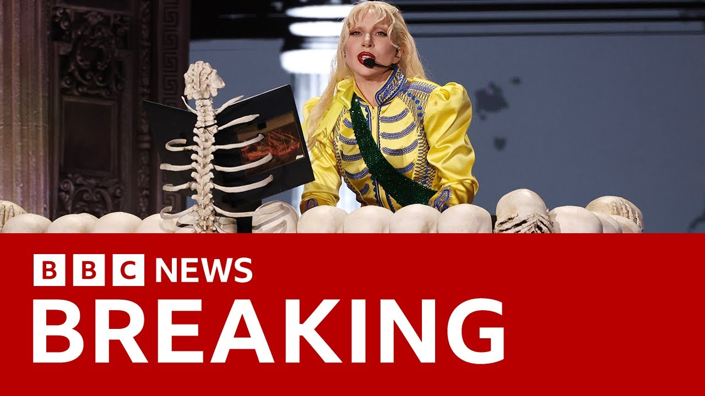

来B站一起耍【Global每日英语简报】
【巴西警方阻止针对Lady Gaga演唱会的炸弹袭击 | BBC新闻】
Summary: Brazilian police thwarted a planned bomb attack on Lady Gaga's historic concert in Rio de Janeiro, attended by over 2 million people, orchestrated by a group promoting hate speech and radicalization.
摘要： 巴西警方挫败了一起针对Lady Gaga在里约热内卢历史性演唱会的炸弹袭击计划，该演唱会吸引了超过200万人参加，策划者是一个宣扬仇恨言论和极端化的组织。

⏱️ Estimated Reading Time: 2 min
Now, some breaking news that's being reported by the Reuters news agency.
现在，路透社报道了一些突发新闻。
This is in reference to the big concert that happened in Brazil in Rio de Janeiro, Lady Gaga.
这是关于在巴西里约热内卢举行的大型演唱会，Lady Gaga的演唱会。
There uh 2 million people at that concert.
呃，有200万人参加了那场演唱会。
Well, we're being told by Brazilian police that they had thwarted, they prevented a bomb attack that had been planned on that historic concert.
巴西警方告诉我们，他们挫败了，他们阻止了针对那场历史性演唱会的炸弹袭击计划。
Two million people attended uh taking part in that concert in Rio de Janeiro on Copa Cabana Beach on Saturday night.
周六晚上，200万人参加了在里约热内卢科帕卡巴纳海滩举行的演唱会。
Brazilian police saying that they had prevented a bomb attack that was being planned.
巴西警方表示，他们阻止了一起正在策划的炸弹袭击。
The civil police of Rio de Janeiro state saying that they were working in coordination with the justice ministry.
里约热内卢州民警表示，他们正在与司法部协调合作。
That the plot was orchestrated by a group promoting hate speech and the radicalization of teenagers including self-harm and also violent content as a form of social belonging.
该阴谋是由一个宣扬仇恨言论和青少年极端化的组织策划的，包括自残和暴力内容作为一种社会归属形式。
Now this is according to the Brazilian police being this is being reported by the Reuters news agency.
这是根据巴西警方的说法，路透社正在报道这一消息。
Uh our understanding is that just over two million people, 2.1 million people attended that concert on Copa Cabana Beach.
呃，我们的理解是，刚刚超过200万人，210万人参加了在科帕卡巴纳海滩举行的演唱会。
And the statement goes on to say that the suspects were recruiting participants, including minors, to carry out coordinated attacks using improvised explosives and Molotov cocktails.
声明还称，嫌疑人正在招募参与者，包括未成年人，使用简易爆炸装置和燃烧瓶实施协同袭击。
They say that uh the recruiters identified themselves as members of Lady Gaga's global fan base known as the little monsters.
他们说，呃，招募者自称是Lady Gaga全球粉丝群体“小怪兽”的成员。
So just that breaking news from the Brazilian police that they'd prevented a bomb attack on Lady Gaga's concert would have been catastrophic because there were around 2.1 million people attending on the beach.
所以，巴西警方的这一突发新闻称，他们阻止了针对Lady Gaga演唱会的炸弹袭击，否则后果将是灾难性的，因为海滩上约有210万人参加。
A free concert that was a historic but described as historic because of the huge numbers of people there.
一场免费演唱会，因其庞大的观众人数而被描述为历史性的。